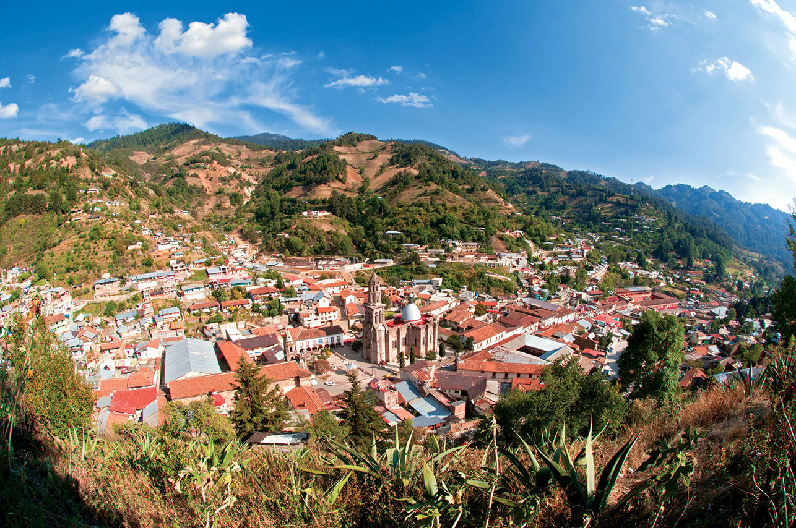
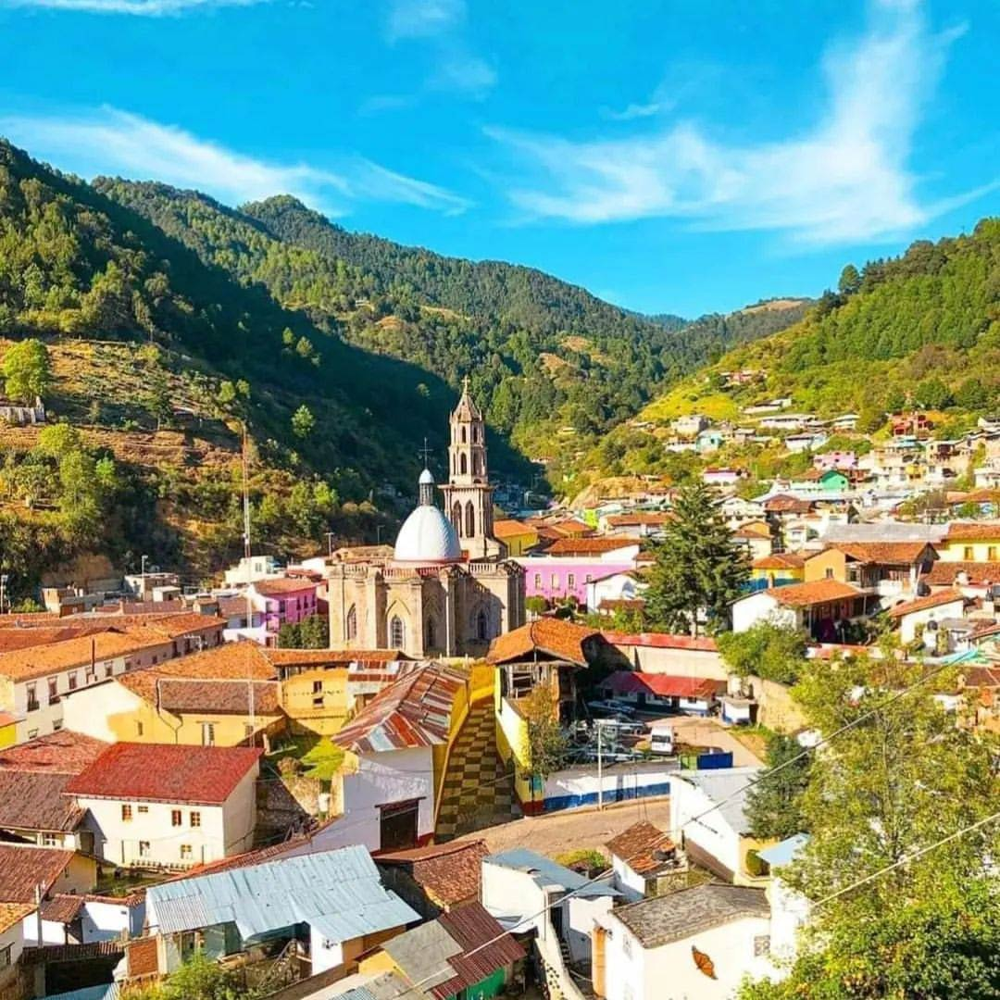
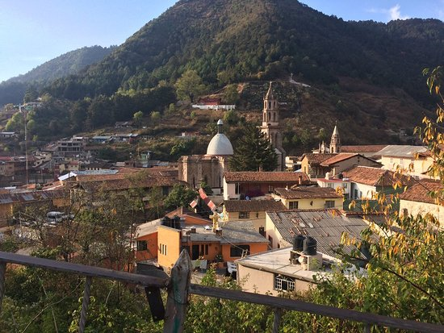
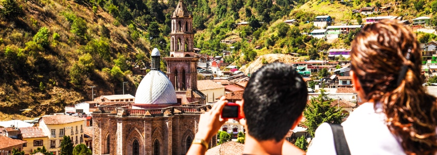

Sube a ellos para llenar tus pulmones del aire puro de la montaña. Desde las terrazas del Monumento al Minero, la Capilla de la Misericordia y la Cruz de Hierro se goza la panorámica del pueblo en lo profundo de una hondonada. Otras actividades que se pueden realizar es pasear en bicicleta por las calles del pueblo o presenciar el Festival de Globos de Cantoya en septiembre.



